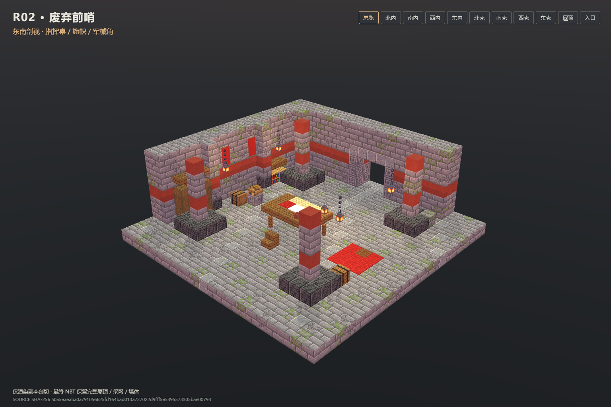

R02 · 废弃前哨
独立成品：21×11×21，北入口 [10,1,0]，安全点 [10,1,6]。静态、视觉、Forge 四旋转与 200 tick 验收通过。以下均为实际 room.nbt 软件渲染，剖切只作用于渲染副本。
SHA-256 50a5eaeaba0a791056625fd164bad013a737022d9fff5e5395573305bae00793

核心接入与部署另由协调方处理；本交付未修改正式实例和玩家存档。交付说明 · QA 汇总 · 哈希清单